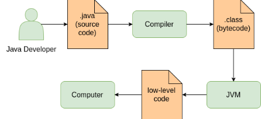

Introduction
Java is a general-purpose object-oriented programming language originally developed by Sun Microsystems (which has since been acquired by Oracle Corporation). It declares the principle "write once, run anywhere" (WORA) meaning a Java application can be executed on any platform where a Java Virtual Machine (JVM) is installed.
Java has been one of the most popular programming languages for many years. According to the TIOBE index, it is in the first position.
The applicability of the language allows developers to write large client-server web applications, modern desktop and mobile applications, useful frameworks, and libraries.
Short history
The Java language project was initiated in 1991 by James Gosling and others. In the beginning, the language was called "Oak".
Sun Microsystems released the Java 1.0 in 1995.
In 2014 Java 8 was released. This version introduced partial support for functional programming and some other updates.
To date, the latest version is Java 9. The first stable release of Java 9 was on September 21, 2017.
Some important features of Java
Let's consider several important features of Java.
-
Platform independence: The compiler converts the source code to bytecode, and, then, the Java Virtual Machine (JVM) executes the bytecode. Each operating system has a different JVM, but every JVM can execute the bytecode, therefore, it works on Windows, Linux, Mac OS and other platforms. So, a program that is written and compiled on one platform can run on another platform. It makes the Java platform completely independent.
-
Simple and clear syntax: Java has syntax like C/C++ and C#. Many syntax elements of the language are readable and widely used in programming.
-
Multi-paradigm: Java is primarily an object-oriented and imperative programming language where almost everything is an object of a class (type). We can consider a typical Java program as a set of interacting objects. The objects can represent entities from the real world or some kind of programming abstractions. When we write a program, we explain how the objects should interact with each others. Actually, Java also supports multiple modern programming paradigms including generic programming, concurrent programming, functional programming (partially supported) and others.
-
Garbage collector: It performs automatic memory cleaning of unused objects at runtime.
-
Built-in multithreading: Java supports multithreading at the language and the standard library levels. It allows concurrent and parallel execution of several parts of a Java program.
For more features see here
Programming and running processes
You will write source code in plain-text files with a .java extension. The files will be compiled into .class files (bytecode) by the javac compiler. To run an application you will use the java tool. The tool can start a .class file with the main method and even whole JAR with multiple classes.
Also, it's possible to write bytecode directly but this is not considered in the topic.
The following picture shows the very simplified process of writing and running programs using Java:

A Java developer writes a program in a text file with the .java extension. The program may include a lot of such files. Then the compiler (usually, javac) translates the program into a .class file containing the bytecode of the program. After, the JVM executes the program giving low-level commands to the computer. Here, the computer is an abstraction that may be a server, PC or even a mobile device. It includes an operating system and a hardware.
Actually, the processes are more complex than the image shows. It is important to note the following: the part before JVM is platform independent, the part after the JVM is platform dependent.